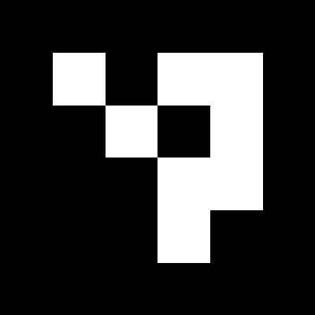
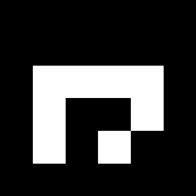
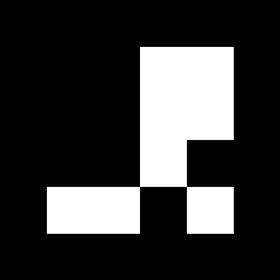
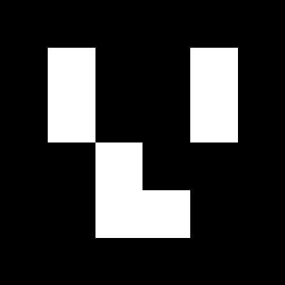
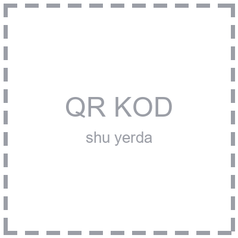

JAVOBLAR VARAQASI
{{ event_title }}
ISHTIROKCHI MA'LUMOTLARI
Ismi
@I@
Familiyasi
@F@
Tug'ilgan sanasi
KUN / OY / YIL
@K@
@O@
@Y@
Sinf
@S@

@ID@
Ishtirokchi raqami
{% for subject in subjects %}
{% endfor %}
{{ subject.name }}
{% for col in subject.columns %}
{% for qn in col %}
{% endfor %}
{{ qn }}
{% for letter in subject.letters %}
{{ letter }}
{% endfor %}
{% endfor %}